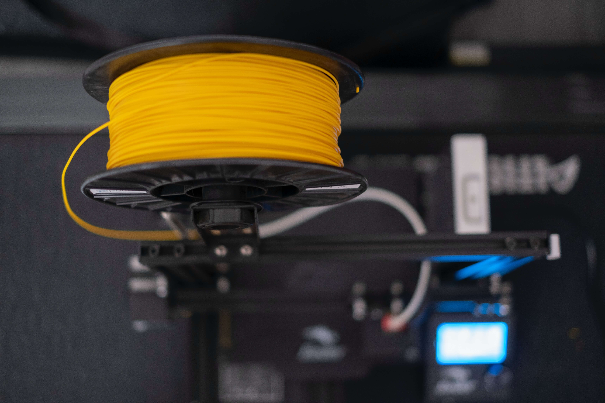

Impresora 3D de filamento:
La impresora 3D de filamento se destaca como una herramienta versátil en el mundo de la fabricación aditiva. Este dispositivo utiliza un filamento termoplástico, como PLA o ABS, que se funde y deposita capa por capa para construir objetos tridimensionales. Su proceso de impresión por deposición fundida (FDM) ofrece una asequibilidad y accesibilidad notables, convirtiéndola en una opción popular para entusiastas, diseñadores y pequeñas empresas.La simplicidad de uso de estas impresoras las hace ideales para aquellos que están dando sus primeros pasos en el mundo de la impresión 3D. Además, su capacidad para producir prototipos rápidos, piezas de repuesto y una variedad de objetos funcionales hace que sean una elección versátil en el ámbito doméstico y profesional. La disponibilidad de diversos tipos de filamentos permite una amplia gama de aplicaciones, desde la creación de modelos educativos hasta la fabricación de piezas personalizadas.

